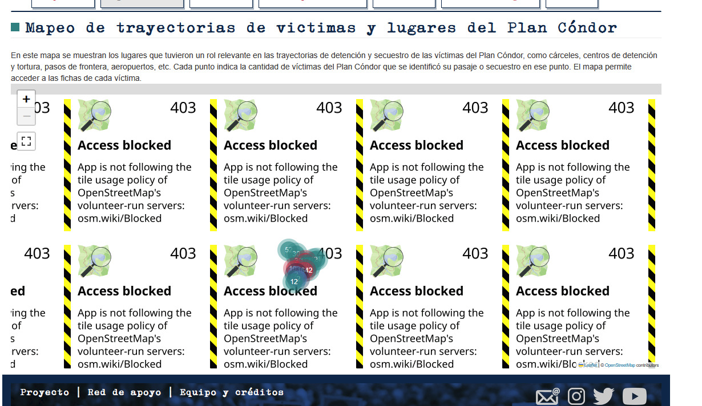

1. Plan de Trabajo
Propuesta de estructura y fundamentos del sitio web pedagógico:
Tema
Homenaje al proyecto "Ausencias" de Gustavo Germano y el impacto de la última dictadura militar (1976-1983).
Objetivos
Mostrar el vacío dejado por las desapariciones y promover la memoria en las nuevas generaciones.
Tipo de homenaje
Sitio web memorial interactivo de registro fotográfico y documental.
Público objetivo
Estudiantes, docentes y público interesado en la memoria e historia reciente.
Recursos
Imágenes históricas y actuales, testimonios, maquetación web HTML/CSS/JS.
Actividades
Exploración visual comparativa, lectura guiada y espacio de reflexión.
2. Contexto Histórico: Desapariciones (1976-1983)
Durante la última dictadura militar en Argentina, el terrorismo de Estado llevó a cabo un plan sistemático de desaparición forzada de personas. Miles de hombres y mujeres fueron secuestrados de sus hogares, trabajos y calles, dejando a sus familias en un estado permanente de búsqueda, incertidumbre y dolor.
3. El Proyecto de Gustavo Germano
El fotógrafo Gustavo Germano desarrolló una propuesta visual única: tomar fotografías familiares de personas desaparecidas antes de su secuestro y recrear la misma escena décadas después, en el mismo lugar, con la misma luz y las mismas posiciones de las personas sobrevivientes.
Al dejar vacío el espacio donde antes estaba la persona desaparecida, la imagen evidencia el paso implacable del tiempo y materializa el impacto visual del vacío que dejaron en sus familias y en toda la sociedad.
4. Galería de Memoria: El Paso del Tiempo y la Ausencia
Interactuá con el botón para observar la diferencia entre la imagen original y la recreación del espacio:
Estado actual: Fotografía original del pasado
5. Recordar no es solo saber lo que pasó
La memoria histórica exige trascender los datos abstractos o las fechas en un libro. Recordar significa ponerle rostro a las víctimas, escuchar sus historias de vida y comprometerse a transmitir su legado a las nuevas generaciones para garantizar que estos hechos no vuelvan a repetirse jamás.
Plan Cóndor y la Memoria Regional
El Plan Cóndor no fue un hecho aislado, sino un sistema formal de coordinación e inteligencia represiva implementado en la década de 1970 entre las dictaduras del Cono Sur (Argentina, Chile, Uruguay, Paraguay, Bolivia y Brasil). Esto permitió la persecución, secuestro y desaparición de personas más allá de las fronteras nacionales.

Mapeo de trayectorias, centros clandestinos y pasos fronterizos vinculados a la represión transnacional.
Explorá los ejes clave del Plan Cóndor:
Haz clic en los botones de arriba para descubrir cómo operaba este sistema represivo.